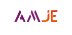
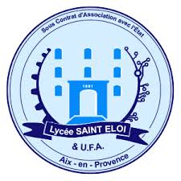
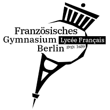

Aéronautique ,spatial et naval
Je suis fasciné par les systèmes embarqués, la mécanique de précision et les innovations qui repoussent les limites techniques.
Étudiant Ingénieur aux Arts-et-Métiers
Passionné de technologie, de code et d'innovation.
À la recherche de nouveaux défis et opportunités.
Étudiant en 1ère année aux Arts-et-Métiers, je me passionne pour la mécanique et les systèmes complexes. Ainsi les domaines de l'aérospatial et de l'aéronautique m'attirent particulièrement. Curieux et rigoureux, j'aime transformer des idées en solutions concrètes pour d'une part améliorer l'existant et d'autre part veiller au respect de la planète.
Des domaines qui nourrissent ma curiosité et inspirent mes projets au quotidien.
Je suis fasciné par les systèmes embarqués, la mécanique de précision et les innovations qui repoussent les limites techniques.
La richesse et la diversité de la nature me fascinent et me poussent à penser différemment afin de préserver notre planète. Je me passionne pour la gastronomie responsable ainsi que pour l’œnologie, qui allient plaisir et respect de l’environnement.
J'apprécie les projets d'équipe, la vie associative et les expériences qui mêlent responsabilité, organisation et dépassement de soi.

Arts-et-Métiers Junior Entreprise (AMJE)
Chargé du pôle qualité au sein de l'AMJE. Relecture des livrables et documents internes, mise en place de processus qualité, suivi des performances de la structure et coordination avec les autres pôles pour assurer la satisfaction client et l'amélioration continue des services proposés.
Arts-et-Métiers (ENSAM), Châlons-en-Champagne, France
Programme Grandes Écoles (PGE) en 3 ans, spécialisation en mécanique et systèmes complexes.
Lycée Aux Lazaristes, Lyon, France
Formation intensive en mathématiques, physique et sciences de l'ingénieur. Admis en école d'ingénieur via concours national.

Aux Maraîchers Provence — Fréjus, France
Travail d'été en tant qu'ouvrier agricole dans une exploitation maraîchère. Expérience enrichissante de travail manuel, gestion d'équipe et respect des normes de sécurité.

Lycée Saint-Éloi, Aix-en-Provence
Mention Très Bien, spécialité Mathématiques et Physique-Chimie, option Maths Expertes.

Berlin, Allemagne
Immersion totale en Allemagne, appropriation rapide de la langue et culture allemande. Formation solide en sciences et mathématiques, avec un accent sur les langues vivantes.
Quelques projets qui me représentent — académiques, personnels ou associatifs.
Conception, réalisation et test d'un système de contrôle de l'orientation (yaw) pour éoliennes domestiques. Résultats prometteurs en conditions réelles, avec une amélioration de l'asservissement du système.
Conception, modélisation et optimisation d'un réducteur industriel. Étude d'un cahier des charges complexe, choix de la structure, dimensionnement préliminaire et optimisation paramétrique.
travaux de groupe avec ma promotion au sein d'un établissement de santé mentale dans le but d'égayer les locaux et la cour principale avec des fresques artistiques.
Participation au concours international de marketing et d'innovation de L'Oréal. Élaboration d'une stratégie de marque innovante pour une nouvelle gamme de produits issus de la parfurmerie durable, avec un focus sur l'inclusivité et l'écologie.
Étude des interactions matériaux-procédés dans le cadre d'un projet de fabrication, d'usinage et de métrologie.
Participation au Monaco Energy Boat Challenge (MEBC) 2027, compétition internationale de bateaux à énergie renouvelable. Conception et construction d'un prototype de catamaran électrique, avec des innovations en matière d'efficacité énergétique et de design hydrodynamique.
Ouvert aux opportunités de stage. N'hésitez pas à me contacter pour discuter de projets ou d'opportunités.